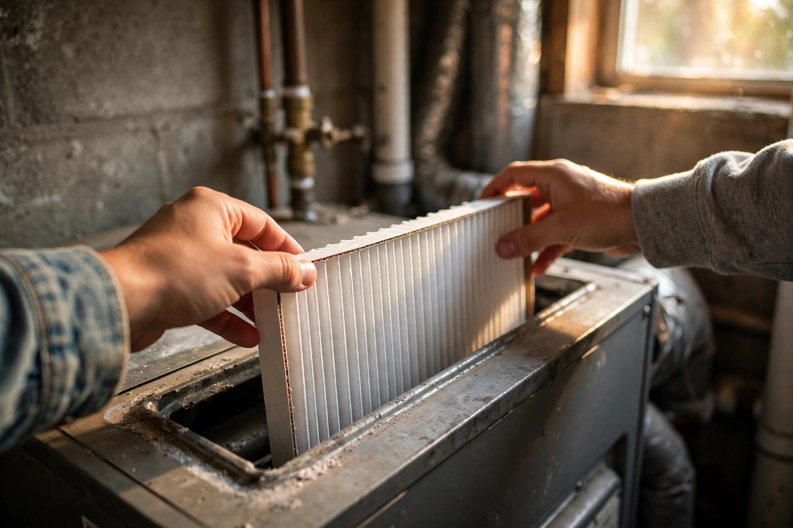

Furnace Filter Replacement: How Often, Which MERV, and the 5-Minute Swap

The furnace filter is a five-dollar part that protects a multi-thousand-dollar system. Ignore it long enough and a furnace that should run 15 to 20 years can start failing years early — clogged filters force the blower motor to work harder, stress the heat exchanger, and the U.S. Department of Energy estimates a dirty filter alone can increase energy use by 5 to 15 percent. October is the right month to reset the habit: the furnace is about to run harder than it has all year, and a fresh filter is the cheapest tune-up you can give it.
How often to replace it (by filter type)
The 90-day rule you see on every box is a starting point, not the answer. What you're using matters more than the calendar:
| Filter type | Replace every |
|---|---|
| Basic 1-inch fiberglass | 30 days |
| Standard 1-inch pleated (MERV 8) | 60–90 days |
| Mid-efficiency pleated (MERV 11–12) | 60 days |
| High-efficiency pleated (MERV 13) | 30–45 days |
| Thick media filter (4–5 inch) | 6–12 months |
Three things push that schedule shorter. Pets: one short-haired pet means changing every 30 to 60 days; multiple pets or heavy shedders often push it to monthly. Higher MERV: denser media catches smaller particles but saturates faster — a MERV 13 can max out in 30 days where a MERV 8 in the same house runs three times as long. Runtime: longer furnace runtime pulls more air through the filter, so where the furnace runs for months without much of a break, a filter that coasts to 90 days somewhere mild may need attention at the 45-to-60-day mark during the coldest stretch.
If you remember nothing else: check the filter monthly and swap it out before it looks dirty, not after. Hold it up to a light — if light barely gets through, or it has shifted from white to gray, it was overdue weeks ago.
Which MERV rating your system can handle
MERV (Minimum Efficiency Reporting Value) is a 1-to-16 scale for how well a filter captures airborne particles. Higher is not automatically better — denser media also restricts airflow more, and too much restriction can freeze the evaporator coil, strain the blower motor, and raise energy costs. Work through this:
Step 1 — What does your furnace manual allow? Most residential systems are designed around MERV 8 to 11. If your furnace or air handler is older, do not go above MERV 11 without checking the manufacturer's maximum-MERV specification or asking a technician to measure static pressure.
Step 2 — Who lives in the house? No pets, no allergies, system in good shape: MERV 8 is the minimum acceptable and does the job. Pets or mild allergies: MERV 11 is the sweet spot — noticeably better particle capture without the airflow penalty. Allergy-sensitive household or wildfire-smoke region: MERV 13, but only if Step 1 clears it.
Step 3 — Skip the gimmicks. Scented and fragrance-infused filters mask odours rather than solving them, and washable filters can trap moisture that leads to mould. Pleated disposable filters are the best value for most homes: they capture fine particles without choking airflow.
Step 4 — Watch for the warning sign. After upgrading a tier, pay attention for a week. Weaker airflow from the vents or longer run times mean the filter is too restrictive for your blower — step back down a tier.
The 5-minute swap, done right
- Turn the system off at the thermostat before opening the filter compartment.
- Note the size printed on the old filter's frame — width, height, depth — and match it exactly on the replacement.
- Check the airflow arrow printed on the new filter. It must point toward the furnace, in the direction the air moves — double-check it before you close the compartment.
- Slide it in fully so it sits flush with no gaps around the edges. Gaps let unfiltered air sneak past, which defeats the whole purpose.
- Write the install date on the filter frame with a marker. Thirty seconds now beats guessing for the next three months — and it's what lets you actually follow the schedule above.
What success looks like: the filter sits flush with the arrow pointing at the furnace, the system starts normally, and airflow from the vents feels as strong as it did with the old clean filter. If airflow still feels weak with a brand-new filter in place, that is no longer a filter problem — have a technician look at it.
Set it and forget it (until the reminder)
The filter fails because nobody remembers it. Break the loop once: set a recurring phone reminder for the first of each month to do the 30-second hold-up-to-the-light check, and note your filter's size and MERV on the reminder so reordering is one tap. The cheapest air-quality upgrade in your house is changing the filter you already own on time.